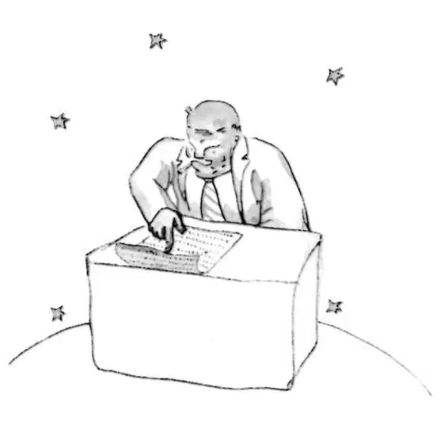

CHAPTER 13
第十三章
—the little prince visits the businessman
——小王子拜访商人
The fourth planet belonged to a businessman. This man was so much occupied that he did not even raise his head at the little prince's arrival.
第四个星球归一位商人所有。这个人太专注了，甚至小王子来了也没有抬头看一眼。
"Good morning," the little prince said to him. "Your cigarette has gone out."
“早上好。”小王子向他问候，“你的烟已经熄灭了。”
"Three and two make five. Five and seven make twelve. Twelve and three make fifteen. Good morning. Fifteen and seven make twenty-two. Twenty-two and six make twenty-eight. I haven't time to light it again. Twenty-six and five make thirty-one. Phew! ？ Then that makes five-hundred-and-one-million, six-hundred-twenty-two-thousand, seven-hundred-thirty-one.”
“三加二等于五。五加七等于十二。十二加三等于十五。早上好。十五加七等于二十二。二十二加六等于二十八。我没空再把它点燃。二十六加五等于三十一。唷！加起来是五亿零一百六十二万二千七百三十一。”
"Five hundred million what?" asked the little prince.
“五亿什么呢？”小王子问道。
"Eh? Are you still there? Five-hundred-and-one million—I can't stop... I have so much to do! I am concerned with matters of consequence. I don't amuse myself with balderdash. Two and five make seven..."
“啊？你还在这儿啊？五亿零一百万……我不能停下来……我还有很多要做！我关心的是重要的事情。我对废话不感兴趣。二加五等于七……”
"Five-hundred-and-one million what?" repeated the little prince, who never in his life had let go of a question once he had asked it.
“什么东西五亿零一百万啊？”小王子又重复问道。他这辈子，只要他问的问题，他就绝不会放过。

The businessman raised his head.
商人抬起头来。
"During the fifty-four years that I have inhabited this planet, I have been disturbed only three times. The first time was twenty-two years ago, when some giddy goose fell from goodness knows where. He made the most frightful noise that resounded all over the place, and I made four mistakes in my addition. The second time, eleven years ago, I was disturbed by an attack of rheumatism. I don't get enough exercise. I have no time for loafing. The third time—well, this is it! I was saying, then, five -hundred-and-one millions—”
“我在这个星球住了四十四年，只被打扰过三次。第一次是二十二年前，不知道从哪儿掉下来一只晕了的鹅打扰了我。他发出极其可怕的叫声，回荡在星球的每个角落，让我在加数字的时候犯了四个错误。第二次是十一年前，风湿病犯了，中断了我的工作。我的锻炼不够。我没有时间闲逛。第三次——哦，就是这次啦！那，我刚才算的是，五亿零一百万——”
"Millions of what?"
“百万什么？”
The businessman suddenly realized that there was no hope of being left in peace until he answered this question.
商人突然意识到，要是不回答这个问题就不得安宁了。
"Millions of those little objects," he said, "which one sometimes sees in the sky."
于是说道：“百万那些小东西，有时可以在天上看到的小东西。”
"Flies?"
“苍蝇？”
"Oh, no. Little glittering objects."
“噢，不是。闪光的小东西。”
"Bees?"
“蜜蜂？”
"Oh, no. Little golden objects that set lazy men to idle dreaming. As for me, I am concerned with matters of consequence. There is no time for idle dreaming in my life."
“哦，不是。会让懒人们想入非非的金黄色的小东西。对我而言，我只关心大事。我可没有时间闲着做梦。”
"Ah! You mean the stars?"
“啊！你是说星星吗？”
"Yes, that's it. The stars."
“对，就是。星星。”
"And what do you do with five-hundred millions of stars?”
“你要五亿颗星星做什么？”
"Five-hundred-and-one million, six-hundred-twenty-two thousand, seven-hundred-thirty-one. I am concerned with matters of consequence: I am accurate.”
“五亿零一百六十二万两千七百三十一。我只关心大事情：我算得很精确。”
"And what do you do with these stars?"
“那些星星用来干嘛呢？”
"What do I do with them?"
“我要它们做什么？”
"Yes."
“是啊。”
"Nothing. I own them."
“什么也不做。我拥有它们。”
"You own the stars?"
“你拥有星星？”
"Yes."
“对。”
"But I have already seen a king who—”
“可是我已经见过一个国王他——”
"Kings do not own, they reign over. It is a very different matter."
“国王并不拥有什么，他们只是统治。是另外一回事。”
"And what good does it do you to own the stars?"
“那拥有星星对你有什么好处呢？”
"It does me the good of making me rich."
“好处就是让我变得富有。”
"And what good does it do you to be rich?"
“那富有又有什么好呢？”
"It makes it possible for me to buy more stars, if any are ever discovered."
“如果发现任何星星，我就有可能买下更多的星星。”
"This man," the little prince said to himself, "reasons a little like my poor tippler..."
“这个人说理有点像我见到的那个可怜的酒鬼……”小王子自言自语道。
Nevertheless, he still had some more questions.
不管怎样，他还有很多问题。
"How is it possible for one to own the stars?"
“一个人怎么可能拥有星星呢？”
"To whom do they belong?" the businessman retorted, peevishly.
“那么它们归谁所有呢？”商人急躁地反驳道。
"I don't know. To nobody."
“我不知道。不属于任何人。”
"Then they belong to me, because I was the first person to think of it."
“那它们就归我所有，因为我是第一个想到这个问题的人。”
"Is that all that is necessary?"
“你觉得有这个必要吗？”
"Certainly. When you find a diamond that belongs to nobody, it is yours. When you discover an island that belongs to nobody, it is yours. When you get an idea before any one else, you take out a patent on it: it is yours. So with me: I own the stars, because nobody else before me ever thought of owning them.”
“当然。当你发现一颗不属于任何人的钻石，那它就是你的了。当你发现一个不属于任何人的岛屿，那它也归你所有。当你想到一个别人都没有想到的点子，那么你就获得它的专利权，它是属于你的。所以对于我：我拥有星星，因为在我之前没有人想过拥有它们。”
"Yes, that is true," said the little prince. "And what do you do with them?"
“是，你说得没错。”小王子说。“那你要它们做什么呢？”
"I administer them," replied the businessman. "I count them and recount them. It is difficult. But I am a man who is naturally interested in matters of consequence."
“我管理它们，”商人回答说，“我数它们，数了再数。这很难做到。但我是生来就只关心大事的人。”
The little prince was still not satisfied.
小王子还是不满意。
"If I owned a silk scarf," he said, "I could put it around my neck and take it away with me. If I owned a flower, I could pluck that flower and take it away with me. But you cannot pluck the stars from heaven..."
“如果我有一条丝巾，”他说，“我可以把它围在我的脖子上，带在身边。如果我有一朵花，我可以把它摘下来，带在身边。可是你不能把星星从天上摘下来啊……”
"No. But I can put them in the bank."
“是的。但是我可以把它们放在银行里。”
"Whatever does that mean?"
“那又是什么意思？”
"That means that I write the number of my stars on a little paper. And then I put this paper in a drawer and lock it with a key."
“也就是说，我把星星的数目写在一张小纸上。然后我把这张纸放在一个抽屉里，用一把钥匙把它锁上。”
"And that is all?"
“那就完了吗？”
"That is enough," said the businessman.
“这就够了啊。”商人说。
"It is entertaining," thought the little prince. "It is rather poetic. But it is of no great consequence."
“很有趣。”小王子想。“好有诗意。可这并不是什么大事。”
On matters of consequence, the little prince had ideas which were very different from those of the grown-ups.
关于大事情，小王子与那些大人们的想法有很大的差异。
"I myself own a flower," he continued his conversation with the businessman, "which I water every day. I own three volcanoes, which I clean out every week (for I also clean out the one that is extinct; one never knows). It is of some use to my volcanoes, and it is of some use to my flower, that I own them. But you are of no use to the stars...”
“我自己有一朵花，”他继续对商人说，“我每天给她浇水。我还拥有三座火山，我每个星期都清扫它们（死火山我也要清扫，因为没人知道它还会不会喷发）。对我的火山来说，我拥有它们给它们带来了用处；对于我的花儿呢，我拥有她对她也有好处。而你对星星来说却没什么用……”
The businessman opened his mouth, but he found nothing to say in answer. And the little prince went away.
商人张着嘴，却什么也说不上来。于是小王子离开了。
"The grown-ups are certainly altogether extraordinary," he said simply, talking to himself as he continued on his journey.
“大人们果真怪极了。”他只是这样对自己说道，边想边继续赶路。